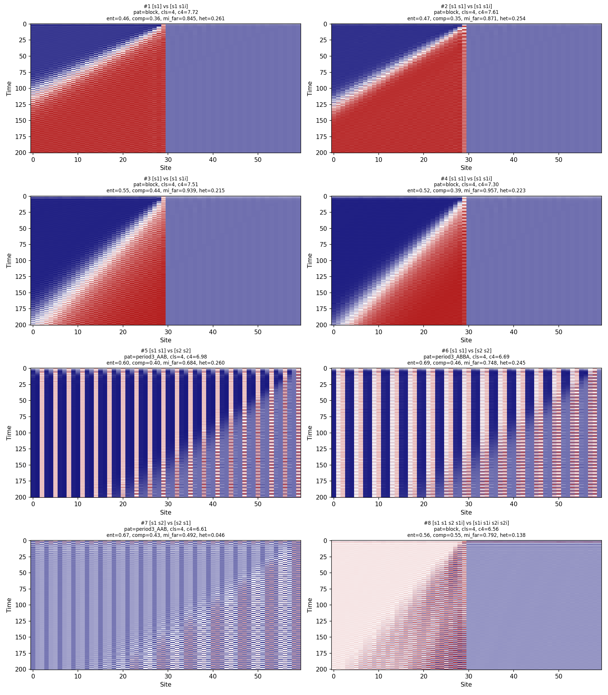
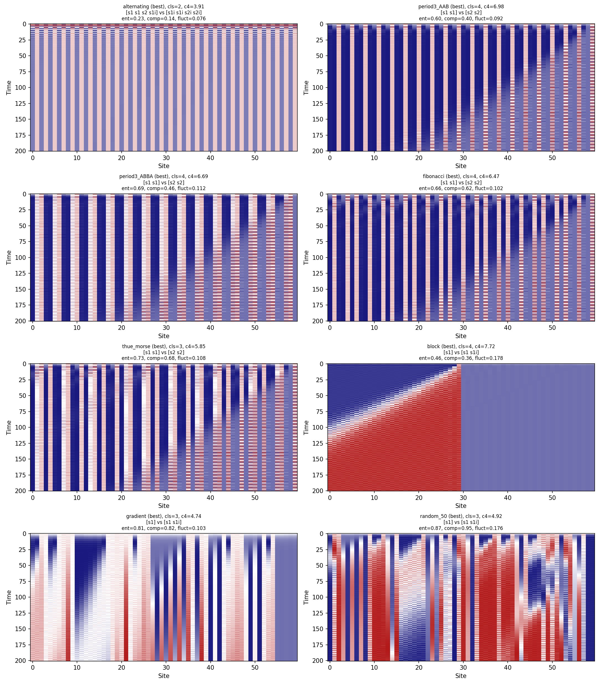
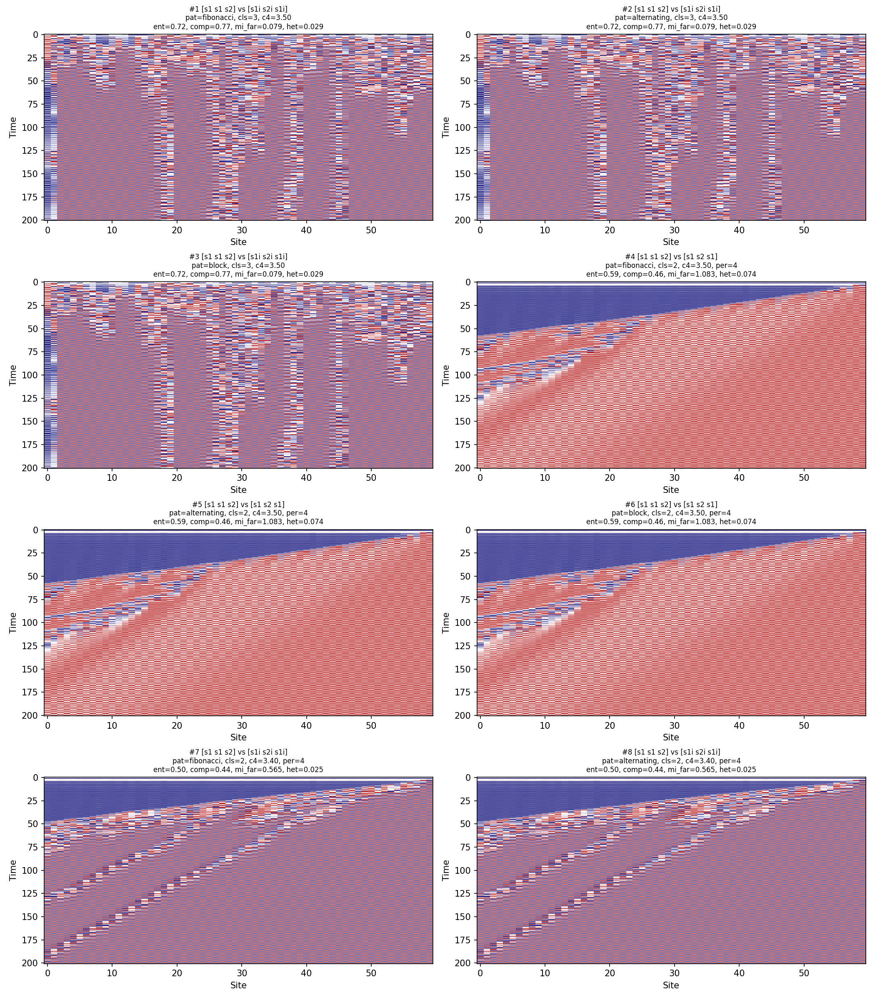
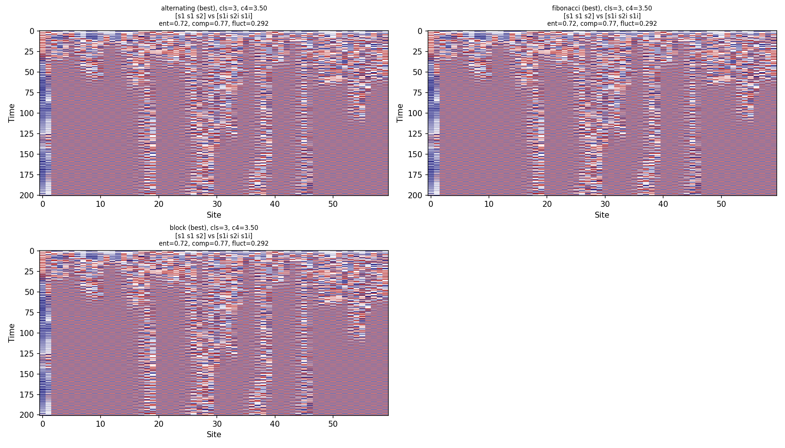

Spatially extended Fibonacci anyon braiding on 60-site chains — searching for genuine complexity
The braiding phase space search established that single-rule repetition on a finite Hilbert space cannot produce genuine complexity. This search extends to spatially extended systemsSystems where the dynamics happen across space, not just at a single point. Each location has its own state, and neighboring locations interact. Cellular automata and lattice models are spatially extended; a single oscillator is not.: 1D lattice chains where different braiding rules operate at different sites, producing emergent spatiotemporal patterns.
The motivation is physical: real topological systems involve many anyons distributed in space. Complexity might emerge from the interplay between local quantum dynamics (braiding) and spatial structure (the lattice pattern), even when each local operation is simple.
Read this as a deliberately-negative control. Both models use a product-state approximationEach site's quantum state is treated as independent — a 60×2 array rather than a 2⁶⁰ vector. Tractable, but it removes entanglement, the one quantum resource that could produce genuine complexity here. that removes entanglement, so we expect no genuine complexity going in. That makes the run useful as classifier calibrationRunning the method on a case whose true answer is known ("no genuine complexity") to measure how often the Wolfram-class classifier mislabels structured-but-simple behavior as complex — its false-positive rate.: the handful of "Class IV" hits below measure the false-positive rateThe fraction of cases flagged "Class IV / complex" when the ground truth is negative. Knowing this rate is what lets us discount apparent "complexity" found by the same classifier elsewhere. of the Wolfram-class classifier, not a discovery.
Lattice model. A 1D chain of 60 Fibonacci anyons. Each adjacent pair has a local 2D fusion space. At each time step:
Rule selection. The top 50 rule pairs were selected from the single-rule search, ranked by commutator normA measure of how much two operations fail to commute — how different AB is from BA. Large commutator norm means the order of applying rules matters a lot, creating more potential for complex dynamics from rule interactions. (maximizing non-commutativity of the two rules).
Spatial patterns. 12 pattern types tested: uniform A, uniform B, alternating, period-3 (AAB), period-4 (ABBA), Fibonacci wordAn aperiodic binary sequence built by the substitution 0→01, 1→0 (producing 0, 01, 010, 01001, ...). Related to the golden ratio. Neither periodic nor random — it has a quasicrystalline structure with long-range order but no exact repetition., three random densities (30%, 50%, 70%), block (half/half), gradient, and Thue-MorseAn aperiodic binary sequence (0110100110010110...) built by repeatedly appending the complement. Overlap-free: no substring appears twice consecutively. Used as a test pattern for dynamics between order and chaos..
Two models:
Total simulations: 1,570, split into 1,300 linear-model runs (50 rule pairs × 12 patterns × 2–3 configurations) and 270 nonlinear-model runs. The two models are tallied separately below, each against its own denominator.
Of the 1,300 linear-model runs:
| Class | Count | Percentage | Description |
|---|---|---|---|
| I (fixed) | 36 | 2.8% | Spatially uniform convergence |
| II (periodic) | 1,149 | 88.4% | Spatiotemporal periodicity or standing waves |
| III (chaotic) | 61 | 4.7% | Domain-wall dynamics and interference |
| IV (complex) | 54 | 4.2% | Apparent spatiotemporal complexity (54/1,300) |
Denominator note: 36 + 1,149 + 61 + 54 = 1,300 linear runs. The 270 nonlinear runs (0 Class IV) are tallied separately below, so the Class IV rate is 54/1,300 ≈ 4.2%.
| Pattern | Class IV count | Class IV rate | Notes |
|---|---|---|---|
| Period-4 (ABBA) | 19 | 12.7% | Best performer by far |
| Fibonacci word | 14 | 5.8% | Aperiodic structure helps |
| Random (30%) | 4 | 8.0% | Low density + disorder |
| Period-3 (AAB) | 8 | 5.3% | Moderate |
| Block (half/half) | 5 | 2.1% | Single domain wall |
| Thue-Morse | 4 | 2.7% | Substitution aperiodicity |
| Uniform A/B | 0 | 0.0% | No spatial heterogeneity |
| Alternating | 0 | 0.0% | Too regular |
| Random (50%, 70%) | 0 | 0.0% | High density suppresses structure |
| Gradient | 0 | 0.0% | Smooth variation not sufficient |
The pattern is clear: intermediate structure wins. Period-4 ABBA (12.7% Class IV) and Fibonacci word (5.8%) both have the right balance of regularity and variation. Uniform patterns produce no complexity. Pure randomness at high density also fails.
The nonlinear model applies state-dependent rule selection: if the left neighbor's P(τ) exceeds a threshold, use rule B; otherwise rule A. This creates a genuine CA where the update rule depends on the current state.
| Class | Percentage | Description |
|---|---|---|
| II (periodic) | ~88% | Threshold feedback creates fast lock-in |
| III (chaotic) | ~12% | Period-doublingA route to chaos where oscillation period successively doubles: 1→2→4→8→... Governed by Feigenbaum's universal constants (δ ≈ 4.669). The same cascade appears in dripping faucets, heart tissue, and population models. to chaos |
| IV (complex) | 0% | No complex intermediate (0/270) |
The nonlinear model is worse for complexity. The threshold feedback overwhelms spatial pattern within approximately 20 timesteps, driving the system either to period-doubling cascades (Class III) or to stable oscillations (Class II). There is no complex intermediate regime.
Close inspection reveals that the 54 candidates classified as Class IV are domain-wall interference patternsStanding and traveling waves created at the boundary between spatial regions with different rules. Visually complex but structurally simple — discrete Fourier spectra, no information processing, no genuine computation. The lattice equivalent of ripples from two dropped stones.: standing and traveling waves created by the boundary between regions with different braiding rules. These patterns have spatial structure, but they lack the hallmarks of genuine complexity:
The nonlinear model shows period-doubling to chaos with no complex intermediate. The threshold mechanism is too blunt:2 it creates a binary switch that locks in quickly, destroying the spatial structure that might support complexity.
Both models use a product-state (mean-field) approximation: each site's state is independent of its neighbors, coupled only through the F-matrix at each time step. This is computationally tractable (the state is 60 × 2 complex numbers, not a 260-dimensional vector), but it discards the very thing that makes quantum systems quantum: entanglementQuantum correlations with no classical analogue. Two entangled particles share information that can't be described by knowing each particle separately. The resource that makes quantum computation more powerful than classical, and the thing the product-state approximation discards..
In a full quantum simulation, braiding would create entanglement between sites. This entanglement is where the complexity lives. The topological properties that make Fibonacci anyons computationally universal are properties of the entangled many-body state, not properties that can be captured in a product-state approximation.
The null result is therefore expected and informative: it confirms that complexity in topological systems is a genuinely quantum phenomenon, not a classical one dressed in quantum language.

Spacetime diagrams for the top Class IV candidates in the linear lattice model. Horizontal axis: site position (60 sites). Vertical axis: time (200 steps). Color: P(τ) at each site. The patterns show domain-wall interference, not genuine complexity.

Class IV candidate distribution across spatial pattern types. Period-4 ABBA dominates at 12.7% Class IV rate. Fibonacci word is second at 5.8%. Uniform and alternating patterns produce zero Class IV.

Nonlinear model (state-dependent rule selection). The threshold feedback drives the system to period-doubling cascades within ~20 timesteps. No complex intermediate regime.

Nonlinear model results grouped by spatial pattern. The threshold feedback mechanism dominates over the spatial pattern: all patterns converge to similar periodic or chaotic behavior within 20 steps.